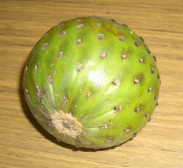
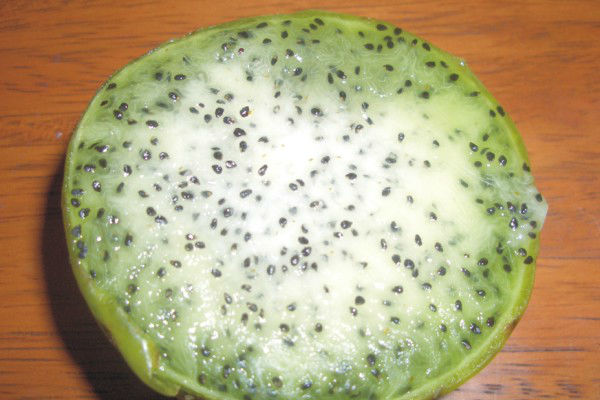
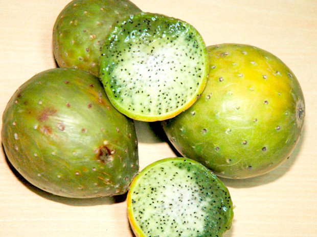

Bienvenidos
Para quienes vivimos en America Latina, en la region de los andes, el Sankayo, Sancayo o Sankayu es un cactus y nos ofrece sus deliciosos frutos. Para los más exigentes su nombre es Lobivia maximiliana o Echinopsis maximiliana y sus diferentes variedades y subespecies, Para mi lo mejor es su flor, me encanta, por eso es mi cactus favorito.
Sankayus
Conozca más


Importancia

Vida salud
Importancia
Vida salud
Aprenda las propiedades curativas
Sanky para evitar la caída del cabello
Si llegaste hasta aquí, creo ciertamente que vale la pena tomar unos minutos para que conozca hoy las propiedades curativas del Sanky para evitar la caida del cabello.
Recomendable para mantener por mucho más tiempo una piel fresca y lozana . Una de sus propiedades más conocidas es la prevenir la caída del cabello y fortalecer las raíces de cabello. El sanky contiene saponinas que efectúan una limpieza profunda del cuero cabelludo evitando el exceso de grasa y la caspa.
Caida del cabello
Por lo general, la calvicie alude a la caída del cabello excesiva del cuero cabelludo. La causa más común de la calvicie es el factor hereditario junto con la edad. Algunas personas prefieren dejar que la calvicie siga su curso sin tratarla ni intentar ocultarla.

Piel fresca y lozana
Olvídate de las exfoliaciones químicas, los estiramientos faciales quirúrgicos, el Botox o cremas carísimas. Puedes obtener una piel fresca y resplandeciente de maneras muy simples.
limpieza cuero cabelludo
Debes lavarte el cabello con un champú de limpieza profunda una vez al mes. Déjalo reposar en el cuero cabelludo por tres minutos (o sigue las instrucciones del champú). De esta forma, eliminarás la acumulación y las células muertas de la piel.
Conozca su indice de masa corporal
El Índice de Masa Corporal es una medida de asociación entre el peso y la medida de una persona. El IMC es usado como uno de varios indicadores para evaluar el estado nutricional.
La fórmula del IMC es el peso en kilógramos dividido por el cuadrado de la altura en metros (kg/m2). El IMC es una indicación simple de la relación entre el peso y la medida que se utiliza frecuentemente para identificar el sobrepeso y la obesidad en los adultos, tanto a nivel individual como poblacional.
La Organización Mundial de la Salud, ha propuesto una clasificación del estado nutricional dependiendo del IMC de una persona.